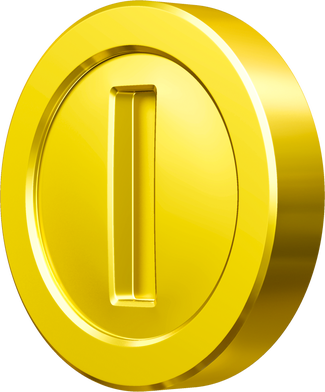
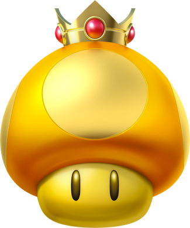

Dies ist eine Itembox, die unterschiedliche Items zum Angreifen, Verteidigen und zum Vorankommen der Gegner beinhalten.
Je nach dem, welche Platzierung du dich befindest und wie weit der Abstand vom Erstplatzierten ist, wirkt sich das auf dem Erhalt deiner Items aus.
Je weiter der Abstand zum Erstplatzierten, umso bessere Items können für die Nächstplatzierten garantiert werden.
Auf manchen Streckenabschnitten gibt es auch eine Doppelitembox, die sogar 2 Items beinhalten.
Diese bestenfalls vorrangig aufsammeln, bevor dein Gegner sie dir wegschnappt.

Münze
Mit dieser Münze kannst du pro Strecke deinen Münzstand auf bis zu 10 aufstocken, um Fahrzeugteile freizuschalten.
Allerdings trägt sie auch zur Erhöhung der Geschwindigkeit bei und bei jeder eingesammelten Münze bekommt man einen minimalen Turboboost.
Die Münzen, die auf der Strecke verteilt rumliegen haben einen Wert von 1 Münze.
Währenddessen die Münzen, die man in den Itemboxen bekommt, jeweils 2 Münzen wert sind.
Turbopilze
Mit diesem Turbopilz oder in der 3er Formation könnt ihr einen kurzzeitigen Turboboost erhalten.
Bananenschalen
Die Bananenschale kann für viele Fahrer der beste Freund und der ideale Begleiter in jedem Rennen sein.
Diese gibt es nicht nur im Einzelformat, sondern auch wie bei den Turbopilzen in 3er Format.
Fährt ein Gegner in die Bananenschale rein, wird dieser geschleudert und verliert 3 Münzen.
Eine Bananenschale kann nicht nur gelegt werden, sondern es kann auch mithilfe des linken Steuersticks, die man nach oben drückt, nach vorne geworfen werden.
Grüne Panzer
Der Grüne Panzer, der ebenfalls wie bei den Turbopilzen und Bananenschalen im 3er Format erhältlich ist,
kann ebenfalls sowohl zum Angreifen des Gegners, als auch zur Verteidigung von gegnerischen Angriffsversuchen genutzt werden.
Dieser kann beliebig nach vorne oder hinten geworfen werden und kann mehrmals gegen eine Bande stoßen,
ehe dieser nach eine gewissen Zeit zerschellen tut.
Roter Panzer
Der rote Panzer ist für viele vordere Fahrer eines der meistgefürchtesten Items, die im Spiel existiert.
Diese gibt es ebenfalls im 3er Format, jedoch verfolgt ein roter Panzer gezielt den vorderen Gegner, um ihn kurzzeitig aus dem Verkehr zu ziehen.
Aber Obacht, denn hat der vordere Gegner einen Superstern aktiviert, so wird dieser ignoriert und der nächstvordere Gegner wird forciert.
Superhupe
Die Superhupe ist das Paradeitem, um den blauen Stachi-Panzer auszuschalten, die durch eine lautstarke Druckwelle zerstört wird.
Allerdings lassen sich durch die Druckwelle auch folgende Items zerstören bzw. ausknocken:
Jedoch lässt sich nicht der Blooper, wie es beim Smartphone-Ableger "Mario Kart Tour" funktioniert, mit der Superhupe zerstören.
Bob-Omb
Der Bob-Omb ist ein Wurfitem, welches man oft bei den vorderen Platzierungen erhalten kann.
Egal, ob beim Wurf oder Ablage, man soll sich keinesfalls bei einer Kartbreite von etwa 5 nähern, da sonst die Explosion nicht nur euch ausschalten wird,
sondern eure Items, die entweder um euch umkreisen oder sie hinter euch gepackt habt, zerstört werden.
Bumerang
Eines der nervigsten Items für den Anwender, aber auch für die Opfer ist der Bumerang,
welches sowohl für den Angriff als auch für die Verteidigung als nützlich erwiesen wird.
Nicht nur Gegner bekommen diese Waffe zu spüren, sondern auch eure Items können davon betroffen werden.
Eine Einheit hat jeweils 3 Würfe.
Feuerblume
Dieses Item, welches schon mal beim Gamecube Ableger "Mario Kart Double Dash" seinen Debüt
und beim 3DS Ableger "Mario Kart 7" seinen Comeback hatte, ist wieder für die Mario Kart 8 Deluxe Version vorhanden.
Nach Aktivierung dieses Items hat man die Feuerblume für eine begrenzte Zeit zur Verfügung.
Piranha-Topfpflanze
In dieser Reihe durfte die Piranha-Topfpflanze seinen Debüt feiern und kann nützlicher sein als man vorher dachte.
Aktiviert man dieses Item, so hat man diese ebenfalls für eine begrenzte Zeit und frisst alles weg, was vor oder neben ihm in die Quere kommt.
Zudem beschleunigt es dich auch zeitweise und treibt dich somit ein wenig temporeicher voran.
Blooper
Der Tintenfisch in der Welt von Super Mario treibt auch bei Mario Kart sein Unwesen.
Nutzt der Anwender dieses Item, werden alle Fahrer, die vor dem Anwender sind, mit schwarzer Tinte deren Sicht zeitweise erschwert.
Unter anderem wird auch die Fahrweise beim Driften erheblich beeinträchtigt.
Buu-Huu
Auch dort feiert Buu-Huu nach dem Mario Kart DS seine Rückkehr bei Mario Kart 8 Deluxe.
Beim Einsatz dieses Geistes klaut es einem beliebigen Gegenspieler ein Item, welches bei dir im 1. Slot zur sofortigen Verfügung steht.
Superstern
Der Superstern ist für die Fahrer sowohl im Mittelfeld als auch hinten ein nützliches Item,
womit man nicht nur eine Zeit lang unverwundbar ist, sondern auch herumliegende Gegenstände, Hindernisse, Fahrzeuge und Fahrer umnieten kann.
Zudem kannst du Offroad fahren und ohne einen Pilz dafür zu nutzen Abkürzungen nehmen.
Crazy-8
Auch wie bei Mario Kart 7 mit der Crazy-7 gibt es auch die im 8er Format bei Mario Kart 8 Deluxe.
Diese enthält 8 verschiedene Items, die um sich kreisen:
Jedoch gibt es paar Anhaltspunkte, die beachtet werden sollen:
Blauer Stachi-Panzer
Das meistgefürchteste Item für den Erstplatzierten im Spiel ist der blaue Stachi-Panzer.
Dieser forciert primär nur den Erstplatzierten, um sein Vorhaben das Rennen als Sieger zu beenden zu stoppen bzw. einzuschränken.
Seit dem Ableger bei Mario Kart 7 fliegt es nicht mehr, sondern durchrast es in der Mitte der Fahrbahn und kann allerdings auch Fahrer,
die hinter dem Ersten sind, aus dem Weg räumen, sofern diese sich auch in der Mitte der Fahrbahn befinden.
Ist der Fahrer allerdings schon nach den 3 Runden/Abschnitten Erster, wird der nächstbeste Fahrer anvisiert
und zählt damit als neuer Erstplatzierter, der noch nicht durch ist.

Goldener Turbopilz
Mit dem sogenannten "Königspilz" kannst du dich von den hinteren Plazierungen nach vorne kämpfen.
Wie auch bei den standardüblichen Turbopilzen kannst du jedoch mit dem goldenen Turbopilz für eine begrenzte Zeit mehrere Turboboosts auslösen.
Blitz
Dieses Item, welches man eher dann bekommt, wenn man von Platz 9 bis 12 weit hinter dem Erstplatzierten ist.
Beim Einsatz dieses Blitzes werden alle Fahrer für eine bestimmte Zeit verkleinert,
jeder verliert 3 Münzen und deren Items, die sie noch besessen haben.
Je nachdem, welche Platzierung man hat, dauert es eine Weile, bis man wieder groß ist.
Bist du weiter vorne, umso länger brauchst du, um wieder auf die normale Größe zu kommen.
Kugelwilli
Mit dem Kugelwilli habt ihr die Chance das Feld von hinten aufzuräumen, um wieder vorne mitspielen zu können.
Dieses Item rast mittig in der Fahrbahn durch und fegt jeden Gegner und jedes Hindernis weg, was ihm im Weg steht.
Nach einer gewissen Zeit oder des Erreichens der Top 5 verlangsamt sich das Item und lässt dich wieder raus.
Auch bei diesem Item gibt es ein Paar gute Ratschläge, wie man den Kugelwilli gezielter einsetzen kann.